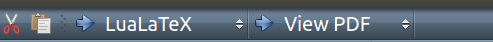

Texmaker
A useful program to use LaTeX on Ubuntu.
Warning
make sure that you play with the build option if it is saying that the references where not found.
For instance, after a while this worked:

Then, the above option did not work and this worked:

To insert .svg files automatically
Useful links: